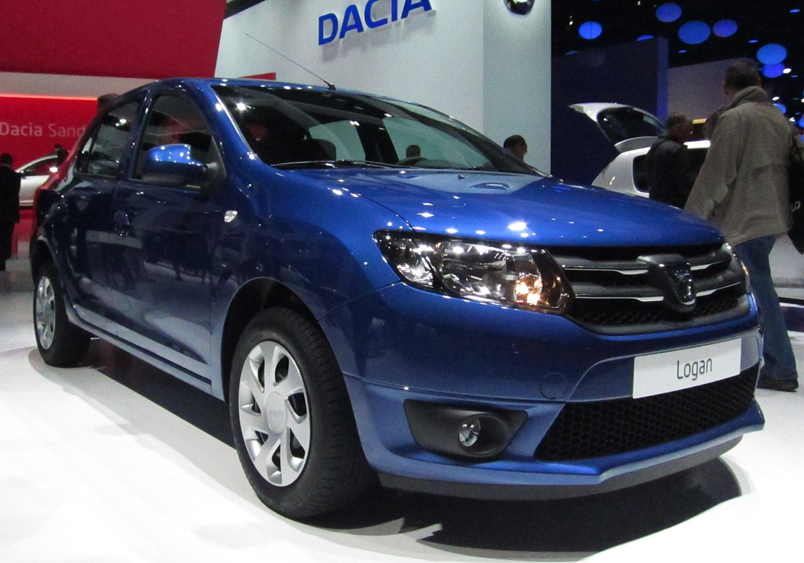

Dacia Logan
Dacia Logan este un autoturism produs de uzinele Dacia în România, lansat pe 2 iunie 2004 la Paris. Este disponibil începând cu 1 septembrie 2004. La Salonul Auto de la Paris din 2000, președintele grupului Renault, Louis Schweitzer, anunță câteva detalii tehnice despre viitorul model Dacia (nume de cod XC90). Reprezentanții Renault au mai anunțat un alt obiectiv, și anume „Dacia de 5.000 €”, lansarea modelului de 5.000 € a fost amânată. În realitate, prețul modelului de bază este de 5.800 €, iar cu toate opțiunile incluse prețul ajunge la 10.000 €. Ultima versiune a fost lansată în anul 2020 sub noua platformă auto CMF-B.

Prima generație
Proiectat la Technocentre Renault de lângă Paris, Logan a fost rezultatul a patru ani de dezvoltare a proiectului X90, anunțat de Renault în 1999, după cumpărarea Dacia în 1998. În timpul unei vizite în Rusia a președintelui francez Jacques Chirac, Louis Schweitzer a remarcat că la dealerii Lada și Renault, Lada-urile de 6.000 de euro se vindeau foarte bine, în timp ce Renault-urile de 12.000 de euro au rămas în showroom. „Văzând acele mașini învechite, mi s-a părut inacceptabil ca progresul tehnic să vă împiedice să faceți o mașină bună pentru 6.000 de euro”. (El a revizuit ulterior această țintă la 5.000 EUR). „De asemenea, am întocmit o listă de specificații în trei cuvinte - modernă, fiabilă și accesibilă - și am adăugat că totul în rest era negociabil.” [Cea mai ieftină versiune a mașinii este de 5.900 de euro, iar prețul poate ajunge la 11.200 de euro, in functie de echipament si taxe vamale. (Modelul de bază pentru Europa de Vest, unde este insignat ca Dacia, dar în general vândut în reprezentanțele Renault, este ceva mai scump). Logan a fost conceput de la început ca o mașină accesibilă și are multe caracteristici simplificate pentru a reduce costurile. Acesta înlocuiește multe mașini mai vechi aflate în producție, inclusiv seria românească Dacia 1310 de mașini bazate pe Renault 12. A fost lansat oficial în iunie 2004 și a început comercializarea în septembrie 2004. Renault inițial nu avea de gând să vândă Logan-ul în Europa de Vest, dar în iunie 2005 a început să importe o versiune mai scumpă a mașinii, începând de la aproximativ 7.500 de euro. A fost un succes neașteptat, cu oamenii care își doreau o mașină ieftină, fără preturi, pe care să o poată repara singuri.
A doua generație
A doua generație Logan a fost dezvăluită de Dacia la Salonul Auto de la Paris 2012. Fotografiile oficiale cu noul Logan au fost lansate pe 17 septembrie 2012. Împărtășește același design frontal cu cea de a doua generație Sandero, dezvăluită și la Salonul Auto, precum și alte elemente. Potrivit Dacia, 60% din lucrările de proiectare au fost realizate în România, la centrul de inginerie al Renault.
 Printre noile caracteristici introduse cu noul model a fost un nou motor cu trei cilindri turbo pe benzină de 0,9 litri și capabil să dezvolte 90 CP (67 kW) și 135 N⋅m (100 lb⋅ft). Celelalte două opțiuni de motorizare sunt motorul pe benzină de 1,2 litri cu 16 valve, disponibil inițial și ca variantă GPL, și motorul diesel de 1,5 litri, disponibil cu două puteri. Performanțele lor sunt preponderent similare cu cele ale Sandero de a doua generație. Ulterior, varianta de 1,2 litri GPL a fost întreruptă, în favoarea lui 0,9 TCe, întrucât primul nu a respectat noile standarde de emisii Euro 6.
O altă completare a fost sistemul Media Nav, introdus deja la începutul aceluiași an pe Lodgy, constând dintr-un ecran tactil de 7 inchi cu funcții multimedia și un software de navigație inclus. Alte caracteristici noi sunt limitatorul de viteză, controlul vitezei de croazieră, senzorii de parcare din spate și airbag-urile frontale și laterale, precum și ABS și ESP, ca standard. Interiorul a fost revizuit semnificativ, cu noi elemente cromate adăugate, iar capota este acum susținută de un loncher. Un nou buton Eco, plasat pe bord, limitează turația motorului la 4.000 rpm.
În 2015, Dacia pune la dispoziția clienților săi prima cutie automată a companiei. Este vorba de transmisia pilotată Easy-R cu 5 sau 6 rapoarte. Transmisia este una manuală la bază, dar la care schimbarea treptelor se face automat de către 3 elemente noi: actuator electro-mecanic de schimbare a vitezelor, actuator care cuplează și decuplează ambreiajul și unitate de control ce calculează când să facă aceste schimbări. Modelele dotate cu transmisia Easy-R nu dispun de o pedală de ambreiaj.
A treia generație
Cea de-a treia generație Logan a fost lansată împreună cu noua Dacia Sandero III, pe 29 septembrie 2020. Este mai lung cu 36 mm (1,4 in), susținut de un ampatament mai lung și o surplosă spate redusă. Are o formă mai subțire, având un parbriz mai înclinat și un acoperiș coborât cu 10 mm (0,4 inchi).
Este construit pe o platformă modulară CMF-B LS folosită de noul Sandero și se pretinde că combină o rezistență și rigiditate mai mari cu o greutate mai mică, respectând în același timp un test de impact mai strict. Noul sistem de propulsie reduce emisiile, iar din 2021 respectă cerințele de control al poluării.